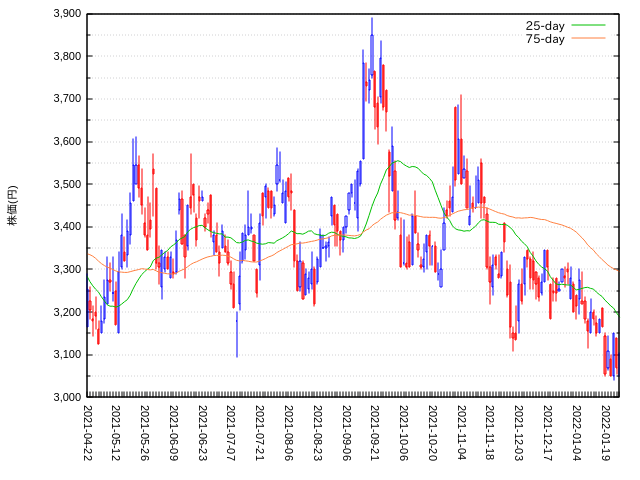
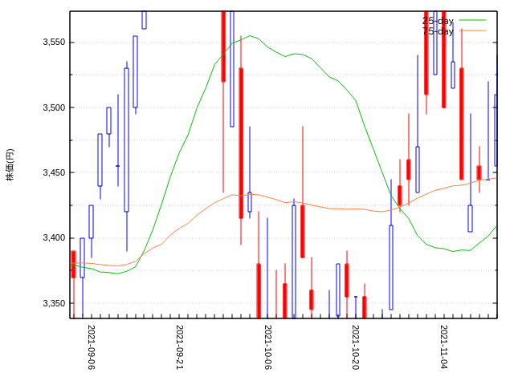
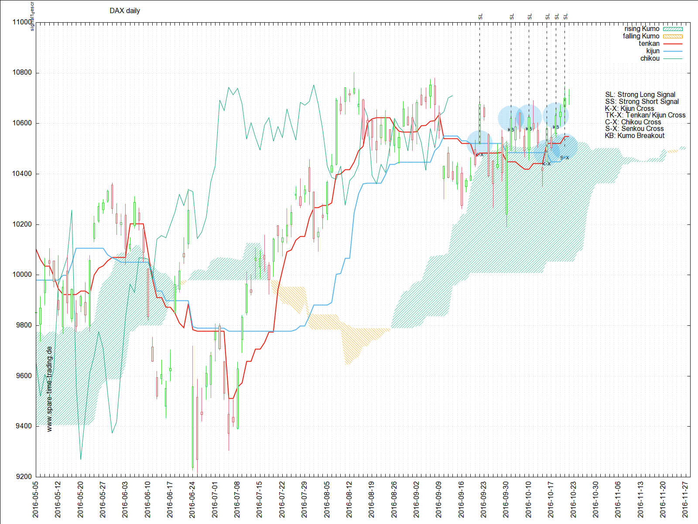

ローソク足と移動平均をgnuplotで描く
ローソク足 と 移動平均 は 株の分析チャートでは「定番中の定番」です。 それをgnuplotで1枚の図に重ね描きしてみました。
ローソク足と移動平均を重ねて描くアプリやソフトは 無数 にあります。 あえてgnuplotを使う意義はさほど大きくはありません。けれども
- フリーソフトなのでコストはゼロです
- ローカルに保存している株価データを使ってコマンド一発でチャートを表示できます
- ローソク足や移動平均の計算方法、表現方法などを変更して図を変更するのも自由自在
- ローソク足と移動平均の2つをgnuplotで重ね描きした事例をネット上で探したのですが、探し方が悪かったのでしょうか、日本語サイトでも英語サイトでもほとんど見当たりませんでした1。
gnuplotには candlesticks スタイルが組み込まれています。
すぐにできると思って取りかかったのですが、
始めてすぐに思いの外やばいことが分かりました（主な「壁」は1を見てください）。
ちょっと見通しが甘かったです :sweat:
しかし、なんとか次の図2のような図が描けるようになりました。
ある会社の株のおよそ１年間の株価データをプロットして見ました。

図2: Gnuplotで描いたローソク足と25日,75日移動平均
図3は上の図の一部を拡大表示したものです。

図3: 上の図の一部を拡大
0.1 補足説明
- ローソク足の色は、わが国では値上がり時は<font color="red">赤</font>、値下がり時は<font color="blue">青</font>にするのが一般的のようです
- 英語圏では日本と逆に、値上がりが<font color="blue">青</font>、値下がりが<font color="red">赤</font>が一般的
- けれども、たとえばこちらなどを見ると
- 色分けに特に決まりはなく好きな色を使ってよい
- 多くのアプリでは値上がり・値下がりに気に入った色を選択可能
- 日本では<font color="red">赤</font>はrising sunの象徴なので値上がりになる
- ということで、結局どっちでも良いようです。
そもそもローソク足チャート分析は日本が 発祥の地2です。日本風の色使いに敬意を表したいのはやまやまですが、個人的な趣味で
<font color="red">赤</font>は<font color="red">赤字</font>を連想させるので値下がり、 <font color="blue">青</font>は<font color="blue">青い空</font>を連想させるので値上がり
としました。
0.2 gnuplotスクリプト
銘柄ごとのデータファイルは次のような構造になっています。
# 日付 始値 高値 安値 終値 出来高 25MA 75MA ： ： ： ： ： ： ： ： 2022-01-21 2511.0 2548.5 2493.0 2540.5 2011100 2566.52 2459.59 2022-01-24 2500.5 2533.0 2491.0 2530.0 1808600 2566.26 2462.31 2022-01-25 2516.0 2516.5 2401.0 2418.0 2793000 2558.52 2464.47
右端の2列（25日移動平均と75日移動平均）の算出は、 前の記事＝「逆ウォッチ曲線をgnuplotで描く(2021/01/24)」で紹介したコードをbashの関数にして使いました。 コードはこの記事の末尾参考資料にある「2.1」をご覧ください。
銘柄ごとのデータファイルの命名ルールは次のとおりです。
銘柄短縮名（アルファベット大文字）-dohlcvMA.dat
たとえば HOGEHOGE-dohlcvMA.dat のようになります。
ここで
-dohlcvMA はデータ列名の 頭文字 からとっています。つまり
<b>d</b>ate, <b>o</b>pening price, <b>h</b>igh price, <b>l</b>ow price, <b>c</b>losing price, <b>v</b>olume, <b>M</b>oving <b>A</b>verge を連ねて -dohcvMA です。
0.3 gnuplotスクリプト
gnuplotスクリプト（ double-curve.plt ）は次のとおりです。
reset # data_to_plot='~/data保管庫/HOGEHOGE-dohlcvMA.dat' out_file='./out.pdf' # 土日を詰める everyNth(countCol,labelCol, N) = \ ((int(column(countCol)) % N == 0) ? stringcolumn(labelCol) : "" ) # Y軸の数値に3桁ごとにカンマ（最大8桁） set decimal locale set format y "%'8.0f" set ylabel "株価(円)" # 軸の設定 set xtics nomirror set mytics 2 set xtics rotate by 270 font 'Arial, 8' # グリッドの設定 set grid ytics mytics # 箱に色をつける set linetype 1 lc rgb 'red' set linetype 2 lc rgb 'blue' # 箱の幅を指定 set boxwidth 0.4 absolute # 描出 set output out_file plot data_to_plot\ using 0:2:3:4:5:($5 < $2?1:2):xticlabels(everyNth(0,1,10)) \ linecolor variable notitle w candlesticks,\ '' using 0:7:xticlabels(everyNth(0,1,10))\ w line lc rgb 'web-green' title '25-day',\ '' using 0:8:xticlabels(everyNth(0,1,10))\ w line lc rgb 'sienna1' title '75-day' set output pause -1
あとで もう一度触れますが、横軸は一見「時間」ですけれども、スクリプト中におなじみの
set xdata time
がありません。株価データがない土日祝日の非営業日を空白にせずに詰めてプロットするために、 X軸は文字列扱いになっています。
なおplot文の最初の using 中にある
($5 < $2?1:2)
は 三項演算子 ? を使った条件分岐です。第5列(終値)の値が第2列の値(始値)よりも小さければ、 linestyle 1 （赤字の<font color="red">赤</font>）を使い、そうでないな
ら linestyle 2 （青空の<font color="blue">青</font>）を使う
ことを記述しています。
1 今後の課題など
1.1 手こずった点
- ローソク足の箱に色をつける方法
白黒ならばgnuplotの
candlesticksスタイルをそのまま使えます。でもちょっと色味があると見やすいので前述のように赤と青に塗り分けました。色々な方法がありますが今回はset linetypeを使いました。 - 箱の幅を拡げる方法
set boxwidth 0.4 absoluteを使いました。次は幅を使って 出来高 の多い少ないを表現する EquiVolume チャートを描いててみようと思っています。 - 土日など非営業日を 詰めて プロットする方法
このstackoverflowの記事を参考にしました。gnuplot内で関数を定義できる機能をつかっています。
everyNth(countCol,labelCol, N) = \ ((int(column(countCol)) % N == 0) ? stringcolumn(labelCol) : "" )
要するにX軸の値を「時間」にせずに「文字列」にするということ。ちょっと不自由な面もありますが、これ以外には簡単な方法が見当たりませんでした。
その他、移動平均の計算方法として EMA (Exponential Moving Average； 指数平滑化移動平均) を試してみたいと思います。
(完)
2 参考資料
2.1 移動平均算出関数
#!/bin/bash # 移動平均を求める関数 # 引数1 $1 = 入力ファイル名 # 引数2 $2 = 列番号(区切りはスペース前提) # 引数3 $3 = 窓サイズ # 出力ファイルは ./tmp-MA-out.dat function moving-average () { # local f_name=$1 local col_num=$2 local window_size=$3 # ファイルから列を抽出 .csv ならカンマにする ext=${f_name##*.} if [ ${ext} == 'csv' ]; then delimiter="," else delimiter=" " fi # col="1,${col_num}" # cut -d "${delimiter}" -f ${col} ${f_name} > ./tmp-target.dat input_file="./tmp-target.dat" wc_l=$( cat ${input_file} | wc -l ) # # ここから本体 # cp /dev/null ./tmp-MA-out.dat i=${window_size} while [ $i -lt $(( $wc_l )) ] # attn do head -n $i ${input_file} | tail -n ${window_size} > ./tmp.dat awk '{a+=$2} END{print $1, a/NR;}' ./tmp.dat >> ./tmp-MA-out.dat i=$(( $i + 1 )) done }
3 Footnotes:
脚注:
ぜんぜん無いわけではありません。
Generating charts with Gnuplotではgnuplotですばらしい ichimoku 出力を描く方法が公開されています。下図の通り、ほとんど完璧な分析チャートです。

自分の用途には完璧過ぎるので、簡単にローソク足と移動平均だけの描出例を探していました。
Pythonなどを使った事例はあるのですが、gnuplotでは見つかりませんでした。gnuplotのユーザには株の分析チャートのニーズが高くないのか、あるいはgnuplotユーザは自力でなんでも描ける人が多いので、解説記事の需要がないのかもしれません。
ローソク分析は山形県酒田市出身の米商人である本間宗久（1724年(享保9年)〜1805年（享和3年））が創案したそうです（図4）が、 その真偽を巡っては議論もあります。しかしいずれにしてもローソク足分析が日本で発生し広まったのは間違いないようです。下の肖像画の出典は酒田市立図書館/光丘文庫デジタルアーカイブです。
図4: 本田宗久の肖像画(早坂豊蔵；作画年1900年)